Geopolitik, utang, dan pasar untuk investor Indonesia. Edisi terverifikasi.
Buku ini lahir dari dua bahan. Yang pertama adalah Geopolitics for Dummies Vol. 1 karya BlackQoral, sebuah pengantar yang ditulis untuk generasi muda agar bisa membaca dinamika dunia dengan tenang dan analitis. Yang kedua adalah riset tatanan dunia yang memeriksa ulang angka-angka buku itu ke sumber primer, lalu memperbaruinya sampai 26 Oktober 2026.
Kerangka berpikir buku asli dipertahankan karena sebagian besar masuk akal: rantai "konflik → komoditas → inflasi → bank sentral → arus modal", berpikir dalam skenario, dan kebiasaan membaca kurs sebelum membaca indeks saham. Yang berubah adalah datanya. Setiap angka penting sudah dicek, kesalahan diperbaiki dan ditandai, dan peristiwa 2025–2026 yang belum dibahas buku asli kini dimasukkan.
Dunia sedang mengalami tiga perubahan besar secara bersamaan.
Data per 26 Oktober 2026| Lapisan | Isi | Sumber utama |
|---|---|---|
| Data historis 2014–2024 | PDB, inflasi, suku bunga, harga aset, arus modal | IMF WEO, BPS, BI, FRED, BEI, MSCI, WGC |
| Data terkini 2025–2026 | Perang Iran, shock minyak, kenaikan suku bunga, krisis IHSG | Rilis resmi bank sentral & statistik, Reuters, CNBC, Kontan, Bisnis |
| Indeks terukur | Geopolitical Risk Index (GPR), VIX, DXY | Caldara & Iacoviello (Fed), CBOE, ICE |
| Kerangka teori | Siklus utang & Siklus Besar Ray Dalio, Four Quadrant, Reflexivity (Soros) | Dalio (2021, 2025); Bridgewater |
| Skenario 2026–2030 | Skenario utama yang saling eksklusif, risiko ekor yang dipisahkan | Penilaian penulis (diberi label) |
| Lapisan verifikasi (baru) | Setiap angka buku asli dicek ulang ke sumber primer | Lihat Lampiran A |
Sebelum membuat model apa pun, kita perlu tahu apa yang sudah terjadi. Bab ini merangkum peristiwa terpenting sejak awal 2025.
Data per 26 Oktober 2026Tabel 1.1 · Kronologi peristiwa pasar dan geopolitik, 2025–2026
| Waktu | Peristiwa | Dampak pasar |
|---|---|---|
| Jan 2025 | Indonesia resmi menjadi anggota BRICS | Simbol posisi "bebas aktif" di antara dua blok |
| 2 Apr 2025 | Tarif "Liberation Day" Presiden Trump | VIX ditutup 52,33 (8 Apr); dolar melemah ±10% pada H1 2025 |
| Mei 2025 | Bentrokan militer India–Pakistan; Moody's mencabut peringkat Aaa AS | Gencatan senjata bertahan hingga kini |
| Jun 2025 | Perang 12 hari Israel–Iran; AS menyerang situs nuklir | Pembuka konflik besar 2026 |
| Jul 2025 | GENIUS Act (regulasi stablecoin AS) ditandatangani | Stablecoin menjadi pembeli T-bills baru |
| 6 Okt 2025 | Bitcoin mencetak rekor ±US$126.210 | Puncak siklus |
| Okt 2025 | Gencatan dagang AS–China di Busan | Kontrol rare earth China ditangguhkan |
| Des 2025 | UE membekukan aset Rusia €210 miliar tanpa batas waktu; pinjaman €90 miliar untuk Ukraina | Senjata keuangan Barat makin permanen |
| 8 Des 2025 | IHSG mencetak rekor ±8.710; ditutup 2025 di 8.646,94 (+22,13%) | Puncak pasar saham Indonesia |
| Jan 2026 | AS menangkap Presiden Venezuela Maduro | ±Separuh produksi minyak Venezuela mengalir ke AS |
| 29–30 Jan 2026 | Emas rekor ±US$5.595, lalu jatuh ±10% dalam sehari setelah Kevin Warsh dinominasikan sebagai Ketua Fed | Penurunan harian emas dan perak terburuk sejak 1980 |
| 20 Feb 2026 | Mahkamah Agung AS membatalkan tarif berbasis IEEPA | ±US$126–158 miliar dikembalikan ke importir |
| 28 Feb 2026 | AS dan Israel menyerang Iran; Selat Hormuz praktis tertutup | Brent dari ±$70 ke puncak ±$118–126 |
| Mar 2026 | Serangan ke fasilitas LNG Qatar (Ras Laffan) | Harga LNG spot Asia +140% |
| 22 Mei 2026 | Kevin Warsh dilantik sebagai Ketua Fed | Independensi Fed menjadi sorotan |
| Jun 2026 | Bitcoin turun di bawah US$59.000; emas ke titik terendah ±US$3.995 | Aset "safe haven" tidak kebal |
| 17 Jun – 8 Jul 2026 | Islamabad Memorandum AS–Iran, lalu runtuh | Brent turun ke ±$70, lalu kembali >$100 |
| 23–31 Jul 2026 | Yen ke ¥163,99 (terlemah sejak 1986); intervensi bersama AS–Jepang | Intervensi terkoordinasi pertama sejak 2011 |
| Jul–Sep 2026 | Houthi mengembargo Arab Saudi dan merebut Pulau Mayyun di Bab el-Mandeb | Transit Bab el-Mandeb −47%, Suez −39% |
| 16–18 Sep 2026 | Fed menaikkan suku bunga ke 3,75–4,00%; BOJ ke 1,25% | Era kenaikan suku bunga kembali |
| 7–8 Okt 2026 | Yield UST 10 tahun 5,36% (tertinggi sejak 2002); gilt 5,53% (tertinggi sejak 2007) | Pasar obligasi negara maju tertekan |
| 15–16 Okt 2026 | MSCI mengusulkan Indonesia diturunkan ke status "Standalone" | IHSG −11,6% dalam sehari, terburuk sejak 1998 |
| 17 & 24 Okt 2026 | Protes BBM di Prancis berubah menjadi kerusuhan | Spread obligasi Prancis lebih lebar dari Italia |
| 23 Okt 2026 | Brent settle US$116,72 | Tertinggi sejak 29 April |
Sumber: Wikipedia (2026 Iran war; Strait of Hormuz crisis), CBS, CNBC, Reuters via Zawya, Bisnis, Investortrust, MSCI, MOF Jepang, Fed, BOJ, KuCoin, Penn Wharton Budget Model. Rincian sumber di folder riset.
Pertumbuhan, inflasi, dan suku bunga lima kekuatan ekonomi yang paling relevan bagi investor Indonesia.
Data historis s.d. 2024 · data terkini per Okt 2026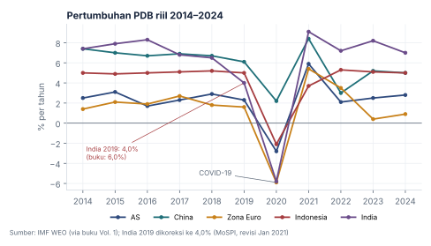
Tabel 2.1 · Pertumbuhan PDB riil (%)
| Tahun | AS | China | Zona Euro | Indonesia | India* |
|---|---|---|---|---|---|
| 2014 | 2,5 | 7,4 | 1,4 | 5,0 | 7,4 |
| 2015 | 3,1 | 7,0 | 2,1 | 4,9 | 7,9 |
| 2016 | 1,7 | 6,7 | 1,9 | 5,0 | 8,3 |
| 2017 | 2,3 | 6,9 | 2,7 | 5,1 | 6,8 |
| 2018 | 2,9 | 6,7 | 1,8 | 5,2 | 6,5 |
| 2019 | 2,3 | 6,1 | 1,6 | 5,0 | 4,0 6,0 |
| 2020 | −2,8 | 2,2 | −5,9 | −2,1 | −5,8 |
| 2021 | 5,9 | 8,4 | 5,4 | 3,7 | 9,1 |
| 2022 | 2,1 | 3,0 | 3,5 | 5,3 | 7,2 |
| 2023 | 2,5 | 5,2 | 0,4 | 5,1 | 8,2 |
| 2024 | 2,8 | 5,0 | 0,9 | 5,0 | 7,0 |
Sumber: IMF World Economic Outlook (seperti dikutip buku Vol. 1). *India memakai tahun fiskal April–Maret; angka 2019 dikoreksi ke ±4,0% (FY2019-20, revisi resmi MoSPI Jan 2021). Angka vintage IMF bisa berbeda tipis dari revisi terbaru.
Tiga pengamatan struktural dari data ini:
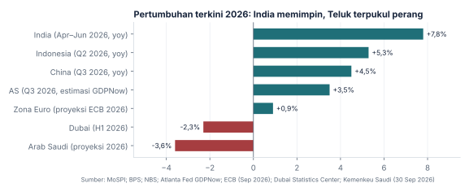
Tabel 2.2 · Inflasi dan suku bunga kebijakan, data terbaru 2026
| Ekonomi | Inflasi (yoy) | Suku bunga kebijakan | Arah 2026 |
|---|---|---|---|
| Amerika Serikat | 3,7% (Sep; inti 2,6%) | 3,75–4,00% | Naik 25 bp (16 Sep), pertama sejak 2023 |
| Zona Euro | 3,8% (Sep) | deposit 2,50% | Naik dua kali sejak perang Iran |
| Jepang | ±3% | 1,25% | Tertinggi dalam 31 tahun (18 Sep) |
| Inggris | tinggi, didorong energi | 3,75% | Ditahan |
| India | 5,54% (Sep) | 5,50% | Naik (7 Okt) |
| Indonesia | 3,28% (Sep; inti 2,84%) | 5,75% | Ditahan; Deposit Facility dinaikkan ke 5,00% |
| Rusia | ±6% | 14% | Turun dari puncak 21% |
| Swiss | ±0–1% | 0% | Ditahan; intervensi valas |
Sumber: BLS, Eurostat/ECB, BOJ, BoE, RBI, BPS, Bank Indonesia, Bank of Russia, SNB, via CNBC, Kontan, Trading Economics (Sep–Okt 2026).
Aset global tidak selalu bergerak bersama, terutama ketika sumber shock datang dari geopolitik atau komoditas.
Data historis s.d. 2024 · IHSG & rupiah s.d. 22 Okt 2026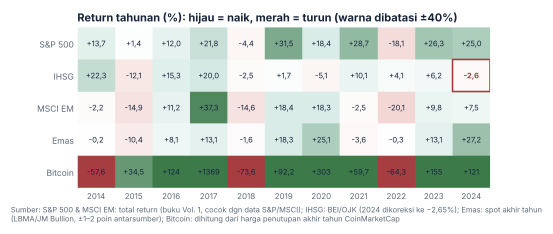
Tabel 3.1 · Harga Bitcoin akhir tahun (dikoreksi)
| Tahun | Buku Vol. 1 | Data (CoinMarketCap) | Catatan |
|---|---|---|---|
| 2017 | $13.880 | $14.156 | Puncak $19.700 terjadi Desember 2017 |
| 2018 | $7.193 | ±$3.743 | Salah tahun: $7.193 adalah harga akhir 2019 |
| 2022 | $19.425 | $16.547 | +17% terlalu tinggi |
| 2023 | $41.626 | $42.265 | Selisih kecil |
| 2024 | $97.000 | $93.429 | Puncak tahun itu ±$108.000 |
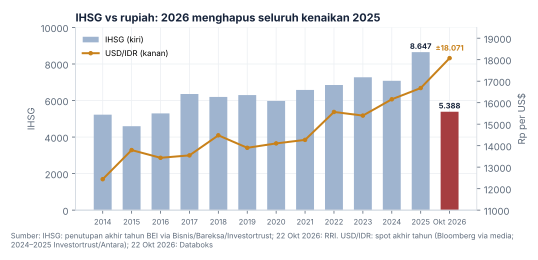
Untuk membaca pasar Indonesia, kurs bukan variabel sampingan melainkan variabel inti. Saat rupiah melemah, tekanan arus keluar asing biasanya meningkat dan IHSG kehilangan tenaga. Tahun 2025 menutup dengan rekor (IHSG 8.646,94, +22,13%). Tahun 2026 menghapus seluruh kenaikan itu: per 22 Oktober IHSG di 5.387,9, ≈ −37,7% sejak awal tahun, dengan asing menjual bersih ±Rp88 triliun.
Bukan semua konflik membuat pasar crash, tetapi semua konflik menaikkan harga ketidakpastian.
Data per Okt 2026VIX (CBOE Volatility Index) mengukur ekspektasi pasar terhadap volatilitas saham AS 30 hari ke depan, sering disebut "indeks ketakutan". GPR (Geopolitical Risk Index, Caldara & Iacoviello) mengukur frekuensi artikel surat kabar yang membahas ketegangan geopolitik, dinormalisasi rata-rata 100 untuk periode 1985–2019.
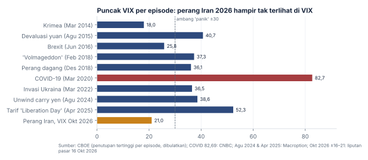
Tabel 4.1 · Episode krisis dan reaksi pasar Indonesia (data terverifikasi)
| Episode | VIX puncak | Reaksi IHSG | Reaksi rupiah |
|---|---|---|---|
| Brexit + Pemilu AS (2016) | ±25,8 | +15,3% setahun | Relatif stabil |
| Perang dagang AS–China (2018) | ±36 | −2,5% setahun | Melemah ke ±15.200 (Okt 2018) |
| COVID-19 (Feb–Mar 2020) | 82,69 | ≈ −37% (puncak ke dasar) | ±16.575 (23 Mar 2020) |
| Invasi Rusia ke Ukraina (2022) | ±36 | +4,1% setahun | ≈ −9% setahun (buku: −3%) |
| Tarif "Liberation Day" (Apr 2025) | 52,33 | Shock global singkat; IHSG tetap ditutup 2025 di rekor | |
| Perang Iran (2026) | ±16–21 (Okt) | ≈ −37,7% YTD (juga karena MSCI) | Rekor ±18.071 |
Sumber: CBOE via CNBC & Macroption; BEI/OJK; Bloomberg via media; Jakarta Post (rupiah 2022). Klaim buku "IHSG −8% saat Krimea 2014" tidak diverifikasi; IHSG justru melonjak pada Maret 2014.
Siapa menguasai chip, menguasai komputasi. Siapa menguasai komputasi, menguasai AI. Dan chip tidak netral secara geopolitik.
Data per Okt 2026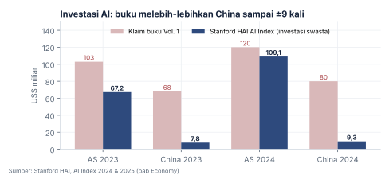
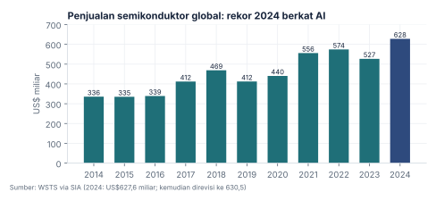
Tabel 5.1 · Kronologi perang chip & AI (dikoreksi dan diperbarui)
| Waktu | Peristiwa |
|---|---|
| 2015 | China mengumumkan "Made in China 2025" |
| 2016 | AlphaGo mengalahkan Lee Sedol |
| 2017 | China menargetkan menjadi pemimpin AI dunia pada 2030 |
| 2018 | AS mulai membatasi ekspor teknologi ke China (kasus ZTE); perang dagang dimulai |
| 2019 | Huawei masuk Entity List AS |
| 2020 | AS melarang TSMC melayani Huawei |
| 2022 | CHIPS Act disahkan (US$52 miliar); kontrol ekspor chip AI canggih (Okt) |
| 2023 | Ledakan ChatGPT/GPT-4 |
| Jan 2024 | ETF Bitcoin spot AS disetujui |
| Jan 2025 | Model DeepSeek R1 mengguncang pasar (buku asli menempatkannya di 2023) |
| Apr–Okt 2025 | China memberlakukan kontrol ekspor rare earth; gencatan Busan menangguhkannya |
| Sep 2026 | Gencatan dagang diperpanjang hanya sampai 10 Januari 2027; rare earth dan chip belum selesai |
| 22 Okt 2026 | Aksi jual saham AI: Nasdaq −2,6%, indeks semikonduktor −6,7% |
Siapa yang mengendalikan "rel" keuangan dunia? Dolar, emas, Bitcoin, stablecoin, dan CBDC.
Data per Okt 2026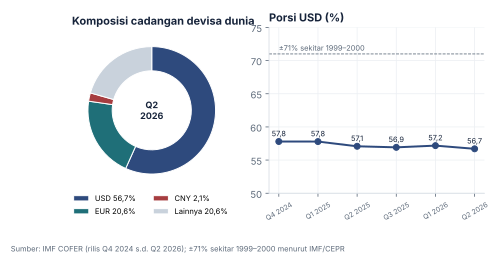
Dolar masih menguasai 56,7% cadangan devisa dunia, ±59% pembayaran SWIFT, dan ±82% pembiayaan perdagangan. Porsinya turun perlahan dari ±71% sekitar tahun 2000. Penantangnya bukan yuan (2,1%) maupun euro (20,6%), melainkan emas.
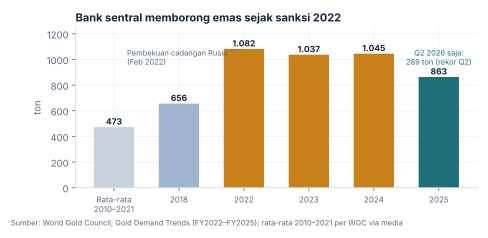
Titik baliknya adalah Februari 2022, ketika Barat membekukan ±US$300 miliar cadangan devisa Rusia. Pesan bagi bank sentral lain jelas: obligasi asing bisa dibekukan, emas di brankas sendiri tidak. Pembelian melonjak ke >1.000 ton per tahun (2022–2024), lalu 863 ton pada 2025 karena harga sangat tinggi, tetap hampir dua kali rata-rata 2010–2021.
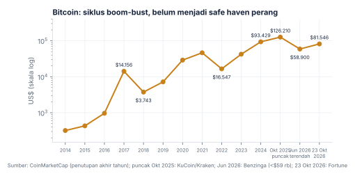
Bitcoin mencapai puncak ±US$126.210 (6 Okt 2025), lalu jatuh di bawah US$59.000 (Juni 2026) di tengah rekor arus keluar ETF. Saat dunia menghadapi shock geopolitik terbesar dekade ini, emas yang dibeli bank sentral, Bitcoin yang dijual. Bitcoin berperilaku seperti aset risiko berbasis likuiditas yang berkorelasi dengan Nasdaq, bukan safe haven.
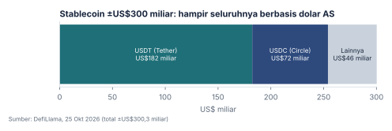
Buku asli memandang blockchain sebagai penantang dolar. Data 2026 menunjukkan hal sebaliknya: stablecoin, yang ±99% berbasis dolar AS dan cadangannya disimpan dalam T-bills, memperluas jangkauan dolar. Aturan final GENIUS Act (OCC, 21 Okt 2026) berlaku 18 Januari 2027 dan mengawasi penerbit stablecoin seperti bank. Hasilnya adalah dedolarisasi di tingkat negara, tetapi dolarisasi di tingkat rakyat.
Tabel 6.1 · Peta CBDC dan sistem pembayaran alternatif
| Blok | Pendekatan | Status 2026 |
|---|---|---|
| AS | Menolak CBDC ritel; mendorong stablecoin swasta | Stablecoin ±US$300 miliar |
| China | e-CNY ritel + CIPS + mBridge | 26 lembaga ikut layanan lintas batas e-CNY (Jun 2026); volume mBridge masih kecil |
| Zona Euro | Digital euro | Pilot pertengahan 2027, penerbitan ±2029 |
| India | e-Rupee | Mencari kegunaan: penyaluran bansos |
| Indonesia | Digital Rupiah (Proyek Garuda) | Mandek di tahap proof-of-concept |
Matriks skenario buku asli tidak memuat shock minyak dari Teluk. Itulah yang terjadi pada 2026.
Data per 26 Okt 2026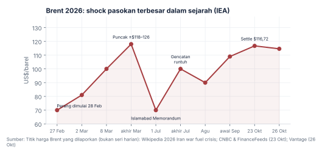
Sebelum perang, pasar minyak diperkirakan surplus dan Brent ±$70. Perang yang dimulai 28 Februari 2026 menutup sebagian besar Selat Hormuz, menghantam fasilitas LNG Qatar, dan memicu kenaikan harga bulanan terbesar dalam sejarah. G7 melepas 100 juta barel cadangan, Jepang 80 juta barel, dan cadangan strategis AS turun ke level terendah sejak 1982.
Tabel 7.1 · Titik-titik sempit (chokepoint) energi dan perdagangan
| Chokepoint | Peran normal | Kondisi Okt 2026 |
|---|---|---|
| Selat Hormuz | ±20% minyak laut & ±20% LNG dunia; 84% ke Asia | Aliran ±14 juta b/h (±82% normal); 103 insiden kapal s.d. 13 Okt |
| Bab el-Mandeb / Laut Merah | Jalur Asia–Eropa via Suez; bypass ekspor Saudi (Yanbu) | Transit −47% (Sep); Suez −39%; Houthi menguasai Pulau Mayyun |
| Selat Malaka | Jalur utama impor energi Asia Timur | Terbuka; tekanan di Laut China Selatan |
Sumber: Wikipedia (2026 Strait of Hormuz crisis; Kpler), Lloyd's List via House of Saud, Al Jazeera.
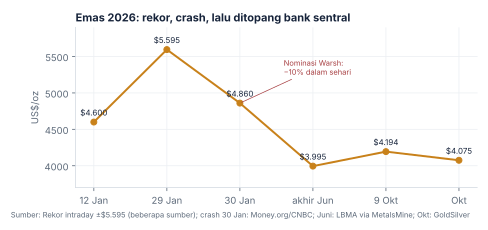
Tabel 7.2 · Komoditas lain, 2026
| Komoditas | Kondisi | Pendorong |
|---|---|---|
| Tembaga | Rekor LME ±US$14.875/ton (Sep) | Pusat data AI, jaringan listrik, mogok tambang Chile |
| Nikel | ±US$16.500–19.000/ton | Indonesia memangkas kuota RKAB ±30% |
| Perak | ±US$75–85/oz setelah crash 30 Jan | Defisit pasokan tahun keenam; lisensi ekspor China |
| Pangan (FAO) | Indeks 136,0 (Sep), tertinggi sejak 2022 | Energi, pupuk, angkutan |
| Urea | +80% (Feb–Apr) ke >US$850/ton | Teluk memasok ±1/3 urea dunia |
Konflik kini multipolar: kekuatan besar, aktor non-negara, ruang siber, dan perang ekonomi.
Data per 26 Okt 2026Tabel 8.1 · Peristiwa utama dan dampak pasar (dikoreksi dan diperbarui)
| Tahun | Peristiwa utama | Pasar global | IHSG / rupiah |
|---|---|---|---|
| 2014 | Aneksasi Krimea; ISIS | S&P +13,7% | IHSG +22,3%; rupiah ≈ −2% |
| 2015 | Krisis utang Yunani; devaluasi yuan | S&P +1,4%; EM −14,9% | IHSG −12,1%; rupiah ke ±13.795 |
| 2016 | Brexit; Trump terpilih | S&P +12,0% | IHSG +15,3%; stabil |
| 2017 | Uji nuklir Korea Utara; krisis Rohingya | S&P +21,8%; EM +37,3% | IHSG +20,0% |
| 2018 | Perang dagang AS–China dimulai | S&P −4,4%; EM −14,6% | IHSG −2,5%; rupiah ke ±14.480 |
| 2019 | Protes Hong Kong; eskalasi Iran–AS | S&P +31,5% | IHSG +1,7% |
| 2020 | COVID-19 | S&P −34% lalu +18,4% | IHSG ≈ −37% lalu pulih; rupiah ±16.575 |
| 2021 | Kudeta Myanmar; Taliban kembali | S&P +28,7% | IHSG +10,1% |
| 2022 | Invasi Rusia ke Ukraina | S&P −18,1%; minyak >$100 | IHSG +4,1%; rupiah ≈ −9% |
| 2023 | Perang Gaza; kudeta Niger | S&P +26,3% | IHSG +6,2%; rupiah menguat ±1% |
| 2024 | Eskalasi Timur Tengah; tarif Trump | S&P +25%; emas rekor | IHSG −2,65%; rupiah ±16.100 |
| 2025 | Tarif "Liberation Day"; perang 12 hari; bentrok India–Pakistan | VIX 52; emas & BTC rekor | IHSG +22,1% (rekor); rupiah ±16.680 |
| 2026 | Perang Iran & Hormuz; Houthi vs Saudi; Venezuela | Brent >$110; yield rekor 20 tahun | IHSG ≈ −37,7% YTD; rupiah ±18.071 |
Sumber: buku Vol. 1 (2014–2023, setelah koreksi); BEI/OJK; Bloomberg via media; liputan 2025–2026 di folder riset. Merah = koreksi atas buku asli.
Tabel 8.2 · Status konflik aktif, Oktober 2026
| Konflik | Status | Saluran ke pasar |
|---|---|---|
| Iran–AS/Israel & Hormuz | Berlanjut sejak 28 Feb; Islamabad Memorandum runtuh 8 Jul; mediator Qatar ke Teheran 26 Okt | Minyak, LNG, pupuk, inflasi global |
| Rusia–Ukraina | Garis depan nyaris beku; perundingan tiga pihak direncanakan November | Gas Eropa, pangan, emas |
| Houthi & Laut Merah | Embargo terhadap Saudi; serangan ke fasilitas Aramco | Pengapalan, minyak Saudi |
| Taiwan & Laut China Selatan | Tekanan abu-abu; latihan tembak langsung 12–17 Okt | Chip, rantai pasok |
| India–Pakistan | Gencatan Mei 2025 bertahan; sengketa Perjanjian Air Indus | Risiko regional |
| Venezuela | Pasca-Maduro, di bawah pengaruh AS | Pasokan minyak belahan barat |
| Sudan & Sahel | Perang saudara; ofensif JNIM di Mali | Emas, uranium |
Buku asli benar bahwa platform digital mempercepat polarisasi dan mobilisasi massa: Brexit dan Cambridge Analytica, protes Hong Kong lewat aplikasi terenkripsi, gerakan Gen Z di Bangladesh 2024 yang menjatuhkan PM Hasina, dan kerusuhan BBM Prancis 2026. Rantainya: teknologi → polarisasi → konflik sosial → ketidakpastian pasar.
Pendapatan harus naik atau pengeluaran harus turun. Siapa yang masih punya ruang, dan sampai kapan?
Data per Okt 2026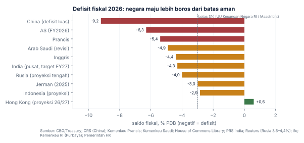
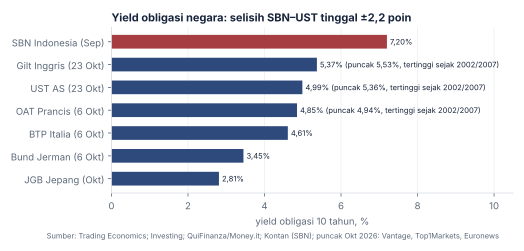
Tabel 9.1 · Strategi bertahan dan batasnya
| Negara | Sumber pendapatan utama | Strategi sekarang | Batas | Solusi paling mungkin |
|---|---|---|---|---|
| AS | PPh individu (±50%), pajak gaji; tarif dibatalkan MA | Stablecoin, penerbitan T-bills, berharap pada AI | Bunga utang > pertahanan | Inflasi & financial repression |
| China | PPN, laba BUMN; penjualan lahan pemda runtuh | Obligasi khusus, teknologi, ekspor (+36% Sep) | Properti, deflasi, utang pemda | Rebalancing ke konsumsi (sulit) |
| Jepang | Pajak konsumsi, pendapatan investasi luar negeri | Stimulus, BOJ normalisasi, intervensi yen | Utang ±230–250% PDB | Inflasi menggerus utang |
| Prancis | PPN, kontribusi sosial (pajak ±46% PDB) | Pemangkasan €54 miliar → kerusuhan | Tak ada mayoritas; ruang pajak habis | Krisis yang memaksa (Pilpres 2027) |
| Inggris | PPh, NI, PPN, jasa keuangan | Kenaikan pajak berulang | Headroom ±£12 miliar | Pertumbuhan atau krisis gilt |
| Jerman | PPh, PPN, kontribusi sosial; ekspor | Ekspansi €500 miliar + pertahanan | Ruang fiskal masih ada | Investasi publik (butuh eksekusi) |
| Arab Saudi | Dividen Aramco, minyak | Berutang; memangkas NEOM | Breakeven $86,6; PDB riil −3,6% | Utang + penyesuaian Vision 2030 |
| Rusia | Migas (<20% kini), pajak non-migas | PPN 22%, dana kekayaan (NWF) | NWF menipis | Membekukan perang |
| India | GST, PPh, cukai BBM | Infrastruktur; kesepakatan dagang AS | Impor energi ±90% | Pertumbuhan tinggi |
| Singapura, Swiss, Hong Kong | Pajak + hasil cadangan | Netral, disiplin | — | Tidak mendesak |
Sumber: CBO, Treasury, CRS, MERICS, Kemenkeu Prancis, House of Commons Library, ifo, Kemenkeu Saudi, Russia Ledger, PRS India, HKMA. Rincian di folder riset (05-negara).
Eksportir komoditas yang juga importir minyak, dengan defisit kembar dan ujian kepercayaan pasar.
Data per 26 Okt 2026Tabel 10.1 · Neraca komoditas Indonesia: siapa untung, siapa rugi
| Indonesia sebagai… | Komoditas | Jika harganya naik |
|---|---|---|
| Eksportir | Batu bara, CPO, nikel & produk olahan, emas, tembaga, timah | Positif: devisa, penerimaan negara, laba emiten |
| Importir bersih | Minyak mentah & BBM, LPG, gandum, kedelai, bahan pupuk | Negatif: subsidi membengkak, defisit transaksi berjalan, rupiah melemah |
Shock 2022 menaikkan batu bara dan CPO, sehingga Indonesia diuntungkan. Shock 2026 menaikkan minyak, LPG, dan pupuk, sehingga hasilnya terbalik: subsidi energi ±2 kali lipat, harga BBM nonsubsidi naik hingga 32%, dan defisit transaksi berjalan mencetak rekor.
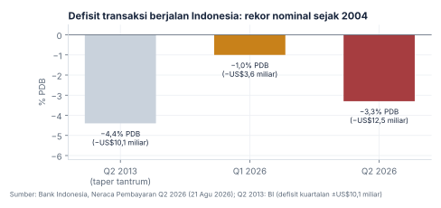
Dengan defisit transaksi berjalan rekor dan defisit APBN mendekati 3%, Indonesia kembali bergantung pada modal asing, mirip kondisi "Fragile Five" 2013. Bedanya, kali ini modal asing sedang keluar.
Kerangka Soros di buku asli tepat untuk membaca 2025–2026. Narasi positif (hilirisasi, pertumbuhan, rekor IHSG 2025) menarik modal, rupiah menguat, IHSG naik, dan narasi makin kuat. Pada 2026 putarannya berbalik: shock minyak, defisit transaksi berjalan, keraguan fiskal, dan MSCI mendorong asing keluar. Rupiah melemah, IHSG turun, dan narasi negatif makin kuat.
Portofolio yang baik bukan menebak masa depan, tetapi bertahan di beberapa masa depan.
Penilaian per Okt 2026Model ini membagi kondisi ekonomi berdasarkan arah pertumbuhan dan inflasi. Bridgewater memakai pembagian empat lingkungan ini sebagai dasar portofolio All Weather; versi "Quad 1–4" dipopulerkan oleh lembaga riset seperti Hedgeye dan 42 Macro.
| Kuadran | Kondisi | Secara historis unggul | Secara historis lemah | Contoh |
|---|---|---|---|---|
| Quad 1 · Goldilocks | Pertumbuhan ↑, inflasi ↓ | Saham, teknologi, EM, kripto | Emas, kas | 2017, 2019, 2023 |
| Quad 2 · Reflasi | Pertumbuhan ↑, inflasi ↑ | Komoditas, saham siklikal | Obligasi panjang | 2021, awal 2022 |
| Quad 3 · Stagflasi | Pertumbuhan ↓, inflasi ↑ | Emas, komoditas, aset berdurasi pendek | Saham, obligasi nominal | 1970-an, 2022 (AS), 2026 (Eropa) |
| Quad 4 · Deflasi/resesi | Pertumbuhan ↓, inflasi ↓ | Obligasi negara, USD, kas | Saham, komoditas, kripto | 2015, 2018, awal 2020 |
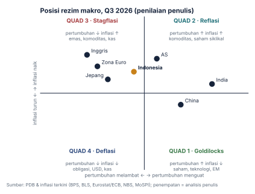
Tabel 11.1 · Skenario utama
| Skenario | Peluang | Ciri | Pemicu yang bisa diamati | Ilustrasi Indonesia* |
|---|---|---|---|---|
| A. Multipolar keruh | ±55% | Konflik regional kronis; AS–China bersaing tanpa perang; inflasi 3–4% | Brent $85–110; gencatan dagang terus diperpanjang pendek | IHSG 5.000–7.000; rupiah 17.000–19.000 |
| B. Normalisasi & kebangkitan teknologi | ±20% | Kesepakatan Iran; AI menaikkan produktivitas; suku bunga turun | Brent <$75; Fed memangkas; MSCI batal menurunkan Indonesia | IHSG 7.000–8.700; rupiah 15.500–17.000 |
| C. Stres berkepanjangan | ±25% | Shock energi berlanjut + krisis fiskal/kepercayaan | Brent >$120; defisit RI >3%; yield UST 30 tahun >6% | IHSG <5.500; rupiah >19.000 |
*Rentang ilustrasi untuk menunjukkan arah dan besaran, bukan target harga.
Tabel 11.2 · Risiko ekor (terpisah dari skenario utama)
| Risiko | Peluang 5 tahun | Sinyal dini |
|---|---|---|
| Blokade atau perang Taiwan | ±5–10% | Latihan PLA tanpa jeda, evakuasi warga asing, sanksi pembekuan aset |
| Krisis utang AS (lelang gagal, dolar −20%) | ±5–10% | Yield naik bersamaan dengan dolar turun; term premium melonjak |
| Krisis JGB / repatriasi Jepang | ±10% | Lelang JGB super panjang gagal; yen menguat tajam |
| Penutupan total Hormuz + Bab el-Mandeb lama | ±15–20% | Serangan ke infrastruktur Abqaiq/Ras Tanura; Brent >$150 |
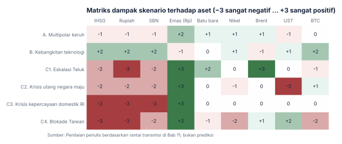
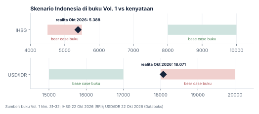
| Variabel | Base case buku | Realita Okt 2026 | Penilaian |
|---|---|---|---|
| Inflasi global lengket 3–4%; Fed "higher for longer" | Ya | CPI AS 3,7%; Fed malah menaikkan | Tepat |
| Dedolarisasi lambat; USD >50% cadangan | Ya | 56,7% | Tepat |
| "Cold peace" AS–China | Ya | Gencatan dagang pendek, tanpa perang | Tepat |
| IHSG 8.000–10.000 | Ya | 5.388 | Meleset ke bear case |
| Rupiah 15.000–17.000 | Ya | ±18.071 | Meleset ke bear case |
| Shock minyak Teluk | Tidak dimodelkan | Brent $116,72 | Titik buta terbesar |
| Risiko tata kelola domestik | Tidak dimodelkan | MSCI; asing jual bersih ±Rp88 triliun | Titik buta kedua |
Prinsip manajemen risiko dan indikator yang perlu dipantau. Kerangka berpikir, bukan saran membeli atau menjual aset tertentu.
Nilai indikator per 22–26 Okt 2026| Prinsip | Makna untuk Indonesia | Contoh |
|---|---|---|
| Kesadaran siklus utang | Yang penting bukan hanya utang/PDB, tetapi mata uang utangnya, beban bunga terhadap pendapatan, dan siapa pembelinya. Ambang "60% PDB" berasal dari kriteria Maastricht, bukan dari Dalio. | Utang RI ±40% PDB dan mayoritas dalam rupiah, tetapi rasio pajak hanya ±10% |
| Defisit kembar | Defisit fiskal + defisit transaksi berjalan = bergantung pada modal asing | 2013 (Fragile Five) dan 2026 |
| Siklus Besar | Buku Dalio (2021) tidak membahas Indonesia secara khusus; label "fase naik" adalah interpretasi. Indonesia punya fondasi (demografi, sumber daya) tetapi institusi belum matang. | Hilirisasi nikel berhasil, tetapi tata kelola pasar dipertanyakan MSCI |
| Reflexivity (Soros) | Narasi dan arus modal saling memperkuat, ke dua arah | 2025 naik, 2026 turun |
| Perencanaan skenario | Skenario saling eksklusif, risiko ekor terpisah, diperbarui setiap kuartal | Bab 11 |
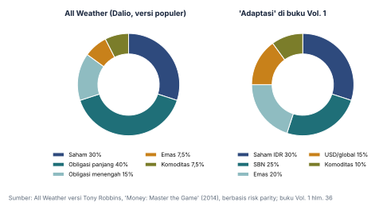
| # | Indikator | Nilai terkini | Cara membaca |
|---|---|---|---|
| 1 | DXY (indeks dolar) | ±101,6 | Naik = tekanan ke EM |
| 2 | Yield UST 10 tahun | ±4,99% (puncak 5,36%) | >5% = modal tertarik ke AS |
| 3 | Brent | $116,72 | Indikator utama bagi Indonesia sebagai importir |
| 4 | VIX | ±16–21 | >25 risk-off; jangan dipakai sendirian |
| 5 | GPR | harian 564,93 (2 Mar) | Konfirmasi, bukan prediktor |
| 6 | Selisih BI-Rate vs Fed | ±1,75–2 poin | Menyempit = daya tarik rupiah turun |
| 7 | PMI manufaktur China (NBS) | 50,1 (Sep) | >50 = permintaan komoditas membaik |
| 8 | USD/IDR | ±18.071 | Rekor terlemah |
| 9 | Transaksi berjalan | −3,3% PDB | Tidak ada di dashboard buku asli; kini paling penting |
| 10 | Defisit APBN | ±2,85% PDB | Mendekati batas UU 3% |
| 11 | Cadangan devisa | US$146,3 miliar | Daya tahan intervensi BI |
| 12 | IHSG & arus asing | 5.387,9; −Rp88 T | Sentimen asing |
| 13 | Inflasi Indonesia | 3,28% | Ruang BI menyempit |
| 14 | Yield SBN 10 tahun vs UST | ±7,2% vs ±5,0% | Selisih ±2,2 poin, terendah historis |
Sumber: Trading Economics, Investing, CNBC, CMC Markets/Manifold (GPR), BI, NBS, Databoks, RRI, Kabarbursa, Kontan, Bloomberg Technoz.
Tabel 12.1 · Kalender peristiwa penting
| Tanggal | Peristiwa |
|---|---|
| 28–30 Okt 2026 | Keputusan Fed, ECB, BOJ; APBN Inggris |
| 3 Nov 2026 | Pemilu sela AS |
| ±5 Nov 2026 | PDB Indonesia Q3 (BPS) |
| Nov 2026 | Perundingan damai Rusia–Ukraina; KTT APEC Shenzhen |
| 10 Jan 2027 | Gencatan dagang AS–China berakhir (kecuali diperpanjang) |
| 18 Jan 2027 | Aturan GENIUS Act berlaku |
| Apr–Mei 2027 | Pilpres Prancis |
| 30 Apr / 30 Jun 2027 | Batas konsultasi dan keputusan MSCI soal Indonesia |
Tiga mental model buku asli, diperbaiki dengan pelajaran 2026, ditambah dua.
Setiap konflik besar menciptakan rantai: shock harga komoditas → inflasi → respons bank sentral → guncangan arus modal. Buku asli menyebut geopolitik "tidak mengubah tren jangka panjang". Itu terlalu jauh. Ketika menyentuh energi, sistem pembayaran, atau rantai pasok, geopolitik mengubah tren: sanksi 2022 mengubah komposisi cadangan dunia, peta energi Eropa berubah permanen, dan perang 2026 membuat PDB riil Arab Saudi diproyeksi −3,6%.
Boom dan bust kripto 2017–2018 dan 2021–2022 mengikuti pola yang sama dengan mania tulip 1637, mania kereta api 1840-an, dan dot-com 2000. Media sosial membuat siklus lebih pendek dan ekstrem. Aksi jual saham AI Oktober 2026 adalah pengingat bahwa pertanyaan "apakah belanja AI akan menghasilkan laba?" kini mulai diajukan pasar.
Indonesia sedang bergerak dari penggali sumber daya menuju pengolah sumber daya. Tetapi edisi ini menambahkan dua hal: Indonesia juga importir bersih energi dan pangan, dan kepercayaan pada tata kelola (fiskal, bank sentral, pasar modal) bisa menentukan nasib aset Indonesia lebih dari harga komoditas.
Ketika kekuatan dominan memakai mata uangnya sebagai senjata, negara lain tidak lari ke mata uang penantang, tetapi ke aset netral. Itulah sebabnya bank sentral membeli emas, bukan yuan atau Bitcoin. Di tingkat rakyat, dolar justru menyebar lewat stablecoin.
Buku asli disusun dengan data 2024 dan dunia berubah drastis dalam 18 bulan. Perbarui data dan probabilitas setiap kuartal, dan nilai dengan jujur skenario mana yang terjadi dan mana yang meleset.
Setiap angka di bawah sudah dicek ulang ke sumber primer atau sekunder yang kredibel.
| # | Klaim buku | Fakta | Sumber |
|---|---|---|---|
| 1 | IHSG 2024 +2,7% | −2,65%; terburuk di ASEAN | Bisnis; OJK |
| 2 | Investasi AI China 2024 US$80 miliar (2023: $68 miliar) | US$9,3 miliar (2023: $7,8 miliar); AS $109,1 miliar | Stanford HAI AI Index |
| 3 | Bitcoin akhir 2018 $7.193; "peak $19k" di 2018 | ±$3.743; puncak $19.700 terjadi Des 2017 | CoinMarketCap; MetalCharts |
| 4 | Bitcoin akhir 2022 $19.425 | $16.547 | DQYDJ/CoinMarketCap |
| 5 | Kerusakan BLM 2020 "$1–2 T" | US$1–2 miliar | Triple-I/PCS |
| 6 | VIX puncak COVID 66 | 82,69 | CBOE via CNBC |
| 7 | Penjualan chip 2024 $588 miliar | $627,6 miliar (revisi $630,5 miliar) | SIA/WSTS |
| 8 | Pertumbuhan India 2019 6,0% | ±4,0% (FY2019-20) | MoSPI via Business Standard |
| 9 | Rupiah 2022 −3% | ≈ −9% | Jakarta Post/Bank Mandiri |
| 10 | Rupiah 2023 −2% | Menguat ±1% (ditutup 15.399) | Tempo |
| 11 | GPR COVID "1300" | Tidak masuk akal; GPR dinormalisasi rata-rata 100 dan tidak mengukur pandemi | Caldara & Iacoviello (Fed) |
| 12 | Statistik "87%/95%" (Pew 2020) | Tidak ditemukan di publikasi Pew | Pew Research 2020 |
| 13 | Kolom "Emas" dan "Brent" di tabel return | Berisi angka PDB Indonesia/India (salin-tempel keliru) | — |
| 14 | Tabel tonggak kripto 2019–2024 | Berisi tonggak semikonduktor (salin-tempel keliru) | — |
| 15 | "DeepSeek mulai mengancam" (2023) | Guncangan DeepSeek R1 terjadi Januari 2025 | — |
| Istilah | Arti dan cara berpikir |
|---|---|
| PDB (GDP) | Nilai semua barang dan jasa yang dihasilkan suatu negara. Naik = ekonomi tumbuh. |
| Inflasi | Kenaikan harga umum. Tinggi → daya beli turun → bank sentral menaikkan suku bunga. |
| Suku bunga kebijakan | Biaya meminjam yang ditetapkan bank sentral. Naik → uang mahal → ekonomi melambat. |
| Defisit fiskal | Belanja negara melebihi pendapatannya. Indonesia dibatasi UU maksimal 3% PDB. |
| Transaksi berjalan | Selisih devisa yang masuk dan keluar dari perdagangan barang, jasa, dan pendapatan. Defisit = butuh modal asing. |
| Defisit kembar | Defisit fiskal dan defisit transaksi berjalan terjadi bersamaan. |
| IHSG | Indeks Harga Saham Gabungan, indeks utama Bursa Efek Indonesia. |
| S&P 500 / MSCI EM | Indeks 500 perusahaan besar AS / indeks saham negara berkembang. |
| Free float | Porsi saham yang benar-benar beredar di publik. Rendah = mudah dimanipulasi; isu utama MSCI vs Indonesia. |
| Yield obligasi | Imbal hasil obligasi. Naik = harga obligasi turun, biaya utang negara naik. |
| Term premium | Tambahan imbal hasil yang diminta investor untuk memegang obligasi jangka panjang. Naik = investor ragu. |
| VIX | "Indeks ketakutan": ekspektasi volatilitas saham AS 30 hari. |
| GPR | Indeks risiko geopolitik berbasis frekuensi berita (Caldara & Iacoviello). Bersamaan, bukan prediktor. |
| DXY | Indeks kekuatan dolar AS terhadap mata uang utama. |
| Carry trade | Meminjam di mata uang berbunga rendah (mis. yen) untuk membeli aset berbunga tinggi. |
| Safe haven | Aset yang dianggap aman saat krisis: emas, dolar AS, franc Swiss. |
| Risk-on / risk-off | Investor mencari return / investor mencari aman. |
| Chokepoint | Selat sempit yang dilalui perdagangan penting: Hormuz, Bab el-Mandeb, Malaka. |
| Stablecoin | Token kripto yang dipatok 1:1 ke mata uang (hampir semuanya dolar AS). |
| CBDC | Mata uang digital yang diterbitkan bank sentral (mis. e-CNY, Digital Rupiah). |
| Dedolarisasi | Upaya mengurangi ketergantungan pada dolar AS. |
| Debasement | Penurunan nilai riil mata uang karena pencetakan uang atau inflasi. |
| Financial repression | Kebijakan menekan suku bunga di bawah inflasi agar beban utang negara terkikis. |
| Four Quadrant | Pembagian kondisi ekonomi berdasarkan arah pertumbuhan dan inflasi. |
| Risk parity | Penyusunan portofolio agar setiap aset menyumbang risiko yang setara; dasar All Weather. |
| Reflexivity | Teori Soros: narasi memengaruhi harga, dan harga memperkuat narasi. |
| Siklus utang (Dalio) | Utang menumpuk hingga beban bunga tak tertanggung, lalu diselesaikan lewat restrukturisasi, inflasi, atau keduanya. |
| Bull / Base / Bear case | Skenario terbaik / paling mungkin / terburuk. |
Daftar lengkap tautan per topik tersedia di folder riset-tatanan-dunia/; data grafik di ebook/data/.
Reuters, Bloomberg, CNBC, Financial Times, Nikkei Asia, Al Jazeera, Kontan, Bisnis Indonesia, Katadata, CNBC Indonesia, Tempo, RRI, The Diplomat, Euronews.